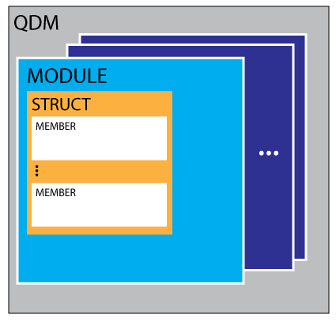

Structure of a QDM
The diagram below shows the structure of a QDM:

It contains the following nested building blocks:
MODULE
Modules are namespaces. They group data types belonging to the same domain. Their primary purpose is to avoid name clashes. When multiple parties are developing Data Types, use of the same names is unavoidable. By using modules, use of the same name is possible. Names can thus be used by multiple parties in different contexts, as long as each party uses a different module.
Example: one application uses a DeviceID topic consisting of a 10-character string. Another application uses a DeviceID topic which is an integer. When these topics meet in the Qeo world, they would clash without the use of modules. Using modules, the fully qualified topic names become e.g. CompanyA.AppB.DeviceID and CompanyC.WackyApp.DeviceID. In situations where clash or confusion is impossible, we can use the simple name (e.g. DeviceID).
STRUCT
A struct represents a physical or logical entity with a certain behavior and a number of properties. These properties are represented by members (see below). Structs either have a behaviour or not. Structs without behaviour cannot stand alone, but can be used as members in a larger struct. Structs with behaviour can be published on Qeo.
Example: consider DeviceID as a 128-bit Qeo struct. This is a logical concept that has no meaning on its own, and therefore no behavior. Now consider DeviceInfo, a large struct that uses DeviceID as one of its members (next to Serial Number, Name,...). DeviceInfo has meaning and can be published on Qeo. DeviceInfo therefore has behaviour (State, in this case).
MEMBER
A member represents a property of an object or concept that is itself represented by a struct. Members have a type, which can be:
- A primitive (boolean, integer, floating point, string)
- A collection (see below for more info)
- An aggregation (i.e. another struct)
There are three types of collection types:
- Sequence: a variable-length list of elements of the same type. It can contain any number of elements.
- Array: a list of elements of the same type, with a fixed length n. The length is defined when defining the member in the QDM. Multi-dimensional arrays are possible.
- Map: a variable-length list of key/value pairs. All keys are of the same primitive type. All values also share the same type. The type of keys and values can differ.
At this moment, Qeo only supports sequences. Other collection types will be supported later.
A member can be:
- Marked (or not) as key: A key member is one that is part of the unique identity of the struct (e.g. DeviceID which is often used as key member).
- Marked as Optional: optional members can be absent from a sample. Note that optional members are not yet supported.
The <doc> Element
Use the <doc> element to add comments and clarifications to your QDM. They act as comments are inserted as such in the code by the Code Generator. These elements can be placed in every level of the QDM.
{kind=link}